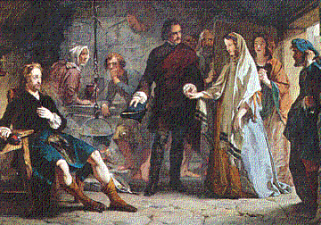
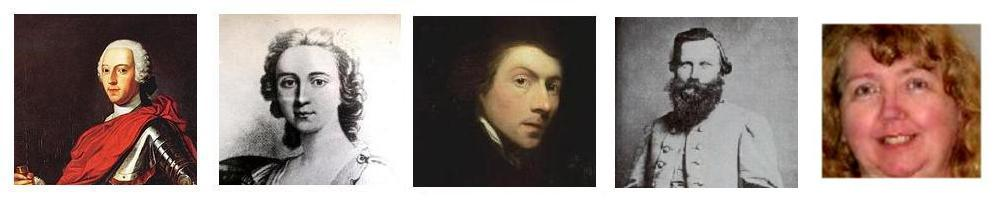

Flora's Adieu to the Prince
Tha mi fodh ghruaim
Tune
Sequenced by Ch.Souchon


|
No Text known
Scottish Slow Air in 6/8 time. From Captain Simon Fraser's "Collection" N°219- 1816 and 1874 editions. "N° 219 is attributed, the editor knows not with what truth, to the celebratrd Miss Flora McDonald, on bidding adieu to Prince Charles. There is a degree of virtue, highly honourable to the national character for sincerity and integrity, perceptible in the universal disregard of the high rewards offered for delivering up the Prince." |
Pas de texte
Air à chanter écossais lent (6/8). Tiré de la "Collection" de Simon Fraser: N° 219 éditions de 1815 et 1874. "Le n°219 est réputé, je ne sais pourquoi, se rapporter aux adieux de la célèbre Melle Flora McDonald au Prince Charles. L'indéniable noblesse d'esprit qui conduisit tout un peuple à dédaigner les fortes récompenses offertes à qui permettrait l'arrestation du Prince fait honneur à nos vertus nationales de sincérité et d'intégrité." |

|
As already stated, there is no evidence that a romance should have blossomed between the young girl and the Prince, in spite of the many songs asserting that there was one.
But, "There are more things in heaven and earth, Horatio, Than are dreamt of in your philosophy." Here is, for instance, the statement of a fine contributor, Ms Patricia Johnson-Holm , who does not share the common view on that puzzling subject-matter: "Let me introduce myself to you through sharing my lineage. Great, Great, Great, Great, Great Grandfather was Bonnie Prince Charlie who married Flora McDonald in a secret ceremony 1746. This marriage took place even though Flora had been engaged to Allen McDonald. The engagement was set aside for Flora to marry Charlie just before traveling with him, so as not to besmirch her reputation (Charlie used the name Betty Burke) to exit the country safely after the false report of the Culloden situation. Flora was very much in love with Charlie even to her dying day, asking to be wrapped in a sheet Bonnie Prince Charlie used. But after she had Charles, Charlie's issue, for safety, Bonnie Prince Charlie being Protestant (unlike his brother Henry Benedict Archbishop of the Basilica Chapel ), had to set the marriage aside, so Allen McDonald who still wanted to marry Flora came back into the picture. This was to make sure that Charlie's issue would be able to live long enough to have a life. This child was known in America as Gilbert Charles Stuart (yes, there are various birth locations mentioned for this famous Artist, but none seem to be correct). Charlie to distance himself from 'Gilbert' used the name Stewart especially during the Revolutionary War. But you will find that Charlie's house was built on Chestnut across from the original capitol of the USA, in Philadelphia. And Gilbert inherited it after 1788 when Charlie ended up dead at the Basilica Chapel where his brother Henry BENEDICT (why the Pope calls himself Benedict, most likely) was head of the Chapel. Charlie was there as a last resort (because his Father James ended up dead when he went to the Basilica Chapel in 1766). However, in order to let the 'great America experiment of freedom' have a possibility of being free from debt, of a loan, that Ben Franklin took out (and was NOT supposed to), that was due in 1788. Charlie went to pay off the loan. To this day this full payment of the loan has never been acknowledged and Charlie was all but written out of history. Well on with the lineage - - - - (Gilbert Charles Stuart) Gilbert's daughter Jane , a wonderful artist, ended up with the inheritance ring. - Then the ring was given to JEB Stuart ( General James Ewell Brown Stuart ) who acknowledged having it in a letter to his wife Flora when referring to it as the 'empty title. ' Of course JEB was killed by Custer and his thugs near the Yellow Tavern. And, JEB's and Flora's daughter ended up dead, too. - So Flora sent James , their son running for his life. James ended up marrying into the Ponca Tribe in Oklahoma area and eventually settled in Texas building a very large ranch and huge land holdings. But greed set in, and James and his family had to run for their lives, ending up in California. James like his Aunt, and her Father Gilbert, were very fine artists. - The eldest of four girls, who called herself Elsie (after running for their lives) was given the ring of inheritance. Elsie married Dodd, whose original Lakota, Rosebud Tribe, name was 'Dart.' - When her daughter Betty , being technically full Native American, also eldest of four girls,was given the ring, (Now some explanation must be made because of false claims to have the real inheritance ring, what you need to know is it was stolen in 1981 by Irene Martin who has tried to make her children the heir to the House of Stuart Estate. What Irene didn't understand was the Covenant 'Blessing' can NOT be stolen. A ring is just a material object, but the Blessing goes way back to the Blessing the House of David, Jacob and Esau etc.. This is why the reference to the Jacobites is so important.) If you check the Succession Act of 1707 you will find that the succession is to be "from the loins of" the Stuart line. [info from Wikipedia] # James II of England: Succession James' younger daughter Anne succeeded to the throne when William III died in 1702. The Act of Settlement provided that, if the line of succession established in the Bill of Rights were to be extinguished, then the crown would go to a German cousin, Sophia, Electress of Hanover, and to her Protestant heirs. Thus, when Anne died in 1714 (fewer than two months after the death of Sophia), the crown was inherited by George I, Sophia's son, the Elector of Hanover and Anne's second cousin. # History of the British line of succession: Anne The Act of Union 1707, which united the thrones of Scotland and England, extended the Act of Settlement to Scotland. On the day of Anne's death, 1 August 1714, the line of succession to the British throne was as follows, as provided by the Act of Settlement 1701: # History of the Jacobite line of succession: "James III & VIII" On the day of James III's death, 1 January 1766, the line of succession to the Jacobite claim was as follows Charles III (Bonnie Prince Charlie ended up dead at Basilica Chapel January 1788); Hanover connection of Patricia's (the current holder of the Blessing) Father, Elmer , whose Mother's Grandmother was Victoria (the wife of Fredrick III the last duly Crowned Holy Roman Emperor [hung in 1888] - whose son Waldmar was called dead and sent to America to save him from what was happening due to Bismark et al.), the Eldest daughter of Queen Victoria (remember that Queen Victoria's husband Albert was the Stuart lineage that Elizabeth II claims is her Stuart connection!)." |
Comme on l'a dit, il n'est pas prouvé qu'il y ait eu une idyle entre la jeune fille et le Prince, en dépit des tous les chants qui disent le contraire.
Mais "Il y a plus de choses, Horatio, sur la terre et sous le ciel Que n'en peut imaginer ta philosophie." Voici, par exemple, le témoignage d'une aimable contributrice, Mme Patricia Johnson-Holm qui ne partage pas l'avis général sur cet intriguant sujet: "Permettez-moi de présenter ma généalogie. Mon arrière, arrière, arrière, arrière, arrière grand-père était le Bon Prince Charles qui contracta une union secrète avec Flora McDonald en 1746. Le mariage eut lieu alors même que Flora était fiancée à Allan McDonald. Ces fiançailles furent rompues pour que Flora puisse épouser Charlie avant leur odyssée commune, par souci de sa réputation (Charles prenant le nom de Betty Burke). Le Prince quitterait ainsi le pays en toute sécurité, eu égard aux fausses nouvelles sur la situation après Culloden. Flora resta très éprise de Charles jusqu'à sa mort et demanda à être enveloppée dans un drap qu'il avait utilisé. Mais quand elle accoucha de Charles , le fils de Charlie, pour plus de sécurité, Charlie étant protestant, à la différence de son frère, Henri Benoît, archevêque de la Chapelle de la Basilique ST Pierre, le mariage fut annulé et Allan McDonald, toujours prêt à épouser Flora rentra en scène. Le but était d'assurer l'existence de la postérité de Charlie. L'enfant est connu en Amérique sous le nom de Gilbert Charles Stuart (on indique plusieurs lieux de naissance de cet artiste fameux, mais aucun ne semble correct). Charlie, pour prendre ses distances d'avec Gilbert, utilisa le nom de "Stewart", surtout pendant la guerre d'Indépendance des Etats Unis. Mais vous pourrez vérifier qu'il fit construire une maison à Chestnut en face de l'emplacement d'origine du Capitole, à Philadelphie. Et Gilbert en hérita après 1788, à la mort de Charlie, quand celui-ci fut enterré dans la crypte de la Basilique, dont son frère Benoît (nom qui a très certainement inspiré le Pape actuel) était le vicaire. Charlie rejoignait son père Jacques qui y fut inhumé en 1766. Cependant, afin que la "grande expérience américaine de la liberté" se fasse libre de toute dette, Charlie était venu rembourser un emprunt contracté par Benjamin Franklin (de façon INOFFICIELLE) et qui restait impayé en 1788. Jusqu'à ce jour, l'extinction de cet emprunt n'a jamais été reconnue et l'intervention de Charlie ignorée des historiens. Mais revenons à ma généalogie... - La fille de Gilbert Charles Stuart, Jane , une grande artiste, hérita de l'anneau nuptial. - Ensuite l'anneau passa au Général James Ewell Brown-Stuart (JEB) qui reconnait le détenir dans une lettre adressée à sa femme Flora, où il en parle comme d'un 'titre sans contenu'. Comme on le sait, JEB fut tué par Custer et ses voyous près de la "Yellow Tavern", une tragédie qui coûta la vie à sa fille également. - Cédant aux supplications de Flora, son fils, James s'enfuit et eut la vie sauve. Il épousa une jeune fille de la Tribu Ponca d'Oklahoma et s'installa au Texas où il monta un très grand ranch avec énormément de terres. Mais ils fut en butte à l'avidité de ses voisins, et dut partir précipitamment avec sa famille pour la Californie. Comme sa tante et Gilbert c'était un artiste de grand talent. - L'aînée de ses quatre filles, qui se faisait appeler Elsie reçut (au moment de leur fuite) l'"anneau d'héritage". Elsie épousa Dodd, dont le nom d'origine en Lakota (tribu de Rosebud) était "Dart (Flèche)". - Quand sa fille Betty , une Américaine à part entière, également l'aînée de quatre filles, reçut l'anneau, elle le transmit ensuit à sa fille Patricia. (Il faut ici parler d'une revendication injustement fondée sur la détention de l'"anneau d'héritage", lequel a été volé en 1981 par Irene Martin qui voulait faire de ses enfants les héritiers des terres des Stuarts. Ce qu'Irene n'a pas compris c'est que la "Bénédiction conventionnelle" NE PEUT être volée. Un anneau n'est qu'un objet, tandis que la Bénédiction remonte à la bénédiction de la Maison de David, Jacob et Esaü, etc... C'est pourquoi, la référence aux Jacobites est si importante). Si l'on se reporte à l' Acte de succession de 1707 on trouve l'expression "issu de" la lignée des Stuarts. [Source: Wikipedia] # Succession de Jacques II d'Angleterre: sa fille cadette Anne succéda à Guillaume III à la mort de celui-ci en 1702. L'Acte de Dévolution prévoyait que si la ligne dynastique fixée par le Bill of Rights venait à être interrompue, la couronne reviendrait à une cousine allemande, Sophie, électrice de Hanovre et à ses héritiers protestants. Aussi, quand Anne mourut en 1714 (moins de 2 mois après la mort de Sophie), la couronne revint à Georges I, fils de Sophie, Electeur de Hanovre et petit-cousin d'Anne. # Au regard de la légitimité britannique: L'Acte d'union de 1707 qui réunit les trônes d'Ecosse et d'Angleterre, étendit l'Acte de dévolution à l'Ecosse. Le jour de la mort d'Anne, le 1er août 1714, la succession au Trône Britannique se fit selon les dispositions de l'Acte de dévolution de 1701. # Au regard de la légitimité Jacobite: Le jour de la mort de "Jacques III/VIII", le 1er janvier 1766, le nouveau roi fut Charles III, (Bonnie Charlie qui fut inhumé dans la crypte de Saint-Pierre de Rome en janvier 1788). Comment le père de Patricia (actuelle détentrice de la Bénédiction), Elmer se rattache aux Hanovre : la mère de sa grand-mère était Victoria , épouse de Frédéric III, dernier Empereur du Saint Empire Romain, (pendu en 1888), dont le fils Waldemar qu'on croyait mort fut envoyé en Amérique pour échapper aux entreprises de Bismarck et consorts), la fille aînée de la Reine Victoria (on se souvient que l'époux de cette reine, Albert, est le chaînon par lequel Elisabeth II affirme, elle aussi, descendre des Stuarts!) |
|
|
|
|
Flora McDonald (1722 - 1790) and the American Revolution
In 1750, at the age of 28, she married Captain Allan MacDonald of Kingsburgh, and in 1773 together they emigrated to North Carolina. During the American War of Independence he served the British government in the 84th Regiment of Foot (Royal Highland Emigrants). Legend has it that she exhorted the Loyalist force at Cross Creek, North Carolina (present-day Fayetteville) that included her husband, Allan, as it headed off to its eventual defeat at the Battle of Moore's Creek Bridge in February, 1776. He was captured after the battle and was held prisoner for two years until a prisoner exchange occurred in 1777. He was then sent to Fort Edward in Windsor, Nova Scotia where he took command of the 84th Regiment of Foot (Royal Highland Emigrants), Second Battalion. After her husband was taken prisoner, Flora remained in hiding while the American Patriots ravaged her family plantation and took all her possessions. When her husband was released from prison she was able to reunite with him at Fort Edward in the fall of 1778. In 1779 Flora returned home to Dunvegan Castle in Isle of Skye, Scotland. After the war, in 1784, Allan followed her. [Source Wikipedia] Gilbert Charles Stuart (born Stewart) (December 3, 1755 – July 9, 1828) was an American painter from Rhode Island. Gilbert Stuart is widely considered to be one of America's foremost portraitists. His best known work, the unfinished portrait of George Washington that is sometimes referred to as The Athenaeum, was begun in 1796 and never finished; Stuart retained the portrait and used it to paint 130 copies which he sold for $100 each. The image of George Washington featured in the painting has appeared on the United States one-dollar bill for over a century. [Source Wikipedia] James Ewell Brown Stuart (born Feb. 6, 1833, on "Laurel Hill", Patrick county, Virginia — died May 12, 1864, Yellow Tavern, near Richmond, Va.) U.S. army officer. He graduated from West Point and was an aide to Col. Robert E. Lee in the defeat of John Brown's raid on Harpers Ferry. In 1861 he joined the Confederate army, becoming brigadier general of a cavalry brigade. On scouting raids he obtained information on Union troop movements that contributed to Confederate victories at the Seven Days' Battle and the Second Battle of Bull Run; Lee called Stuart the "eyes of the army." As major general, he helped win the battles of Fredericksburg and Chancellorsville. Before the Battle of Gettysburg, he was instructed by Lee to gather information on Union troop movements; he was delayed on a raid and arrived after the battle had begun. Though criticized for his action, he continued to provide intelligence to Confederate forces. He was mortally wounded at Yellow Tavern on the outskirts of Richmond (Va). [Source: Civil War Home] |
Flora McDonald (1722 -1790) et la Révolution américaine
En 1750 Flora, alors âgée de 28 ans, épousa le capitaine Allan McDonald de Kingsburgh et en 1773 le couple émigra en Caroline du Nord. Pendant le guerre d'Indépendance, Allan servit dans l'armée anglaise, dans le 84ème régiment d'infanterie (Royal Emigrés des Highlands). On prétend que Flora harangua les forces loyalistes à Cross Creek (l'actuelle Fayetteville) dont son mari faisait partie , quand elles partirent pour la bataille finale de Moore's Creek Bridge en février 1776 qui se solda par une défaite. Allan fut fait capturé et retenu prisonnier pendant deux ans. En 1777 il fut envoyé à Fort Edward en Windsor, Nouvelle Ecosse où il prit la tête du 2ème bataillon de son régiment. Pendant la captivité de son mari, Flora se cacha, alors que le patriotes américains dévastaient les plantations de sa famille et s'emparaient de tous ses biens. Quand son époux fut libéré, elle le put le rejoindre à Fort Edward en automne 1778. L'année suivante, Flora retourna à Dunvegan Castle dans l'Île de Skye en Ecosse. Son mari la suivit, après la guerre en 1784. [Source Wikipedia]. Gilbert Charles Stuart (né Stewart, 3 décembre 1755 - 9 juillet 1828) était un peintre américain originaire de Rhode Island. Gilbert Stuart est généralement considéré comme l'un des meilleurs portraitistes américains. Son œuvre la plus connue est le portrait inachevé de George Washington, appelé parfois "l'Athenaeum", commencé en 1796 et jamais terminé. Stuart conserva le portrait et l'utilisa pour en faire 130 copies qu'il vendit 100 dollars chacune. Ce portrait de Washington figura sur les billets d'un dollar américain pendant plus d'un siècle. [Source Wikipedia]. James Ewell Brown Stuart (né le 6 février 1833, à "Laurel Hill", comté de Patrick, Virginie - mort le 12 mai 1864 à Yellow Tavern, près de Richmond, Virginie). officier de l'armée américaine. Il fit ses études à West Point et assistait le colonel Robert E. Lee quand celui-ci fit échec à l'attaque de John Brown sur Harpers Ferry. En 1861 il rallia l'armée Sudiste et fut promu général de brigade dans la cavalerie. Au cours de missions d'éclaireur, il recueillit des renseignements sur les mouvements des Nordistes qui contribuèrent aux victoires sudistes lors de la bataille des Sept Jours et de la 2ème bataille de Bull Run. Lee appelait Stuart "les yeux de son armée". En tant que général, il fut un des artisans des victoires de Fredericksburg et de Chancellorsville. Avant la bataille de Gettysburg, il fut chargé par Lee de reconnaître les mouvements des troupes nordistes et, de ce fait, ne prit part à la bataille qu'après qu'elle eut commencé. Bien que critiqué pour son action, il continua ses missions de reconnaissance. Il fut mortellement blessé à Yellow Tavern dans les faubourgs de Richmond (Virginie) . [Source: Civil War Home] |